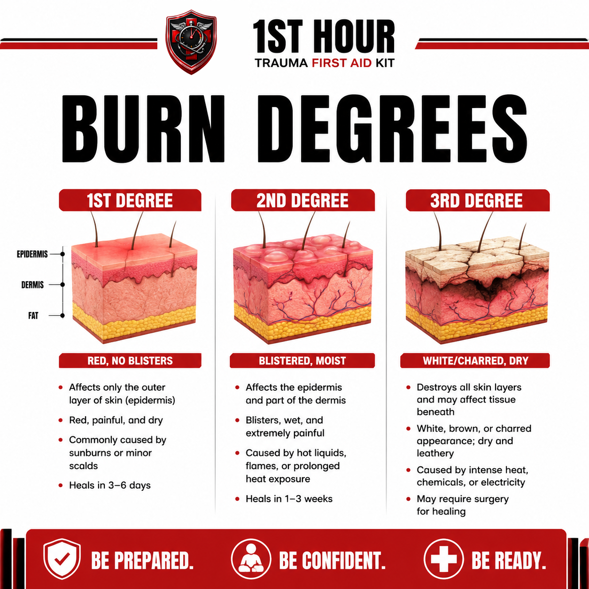
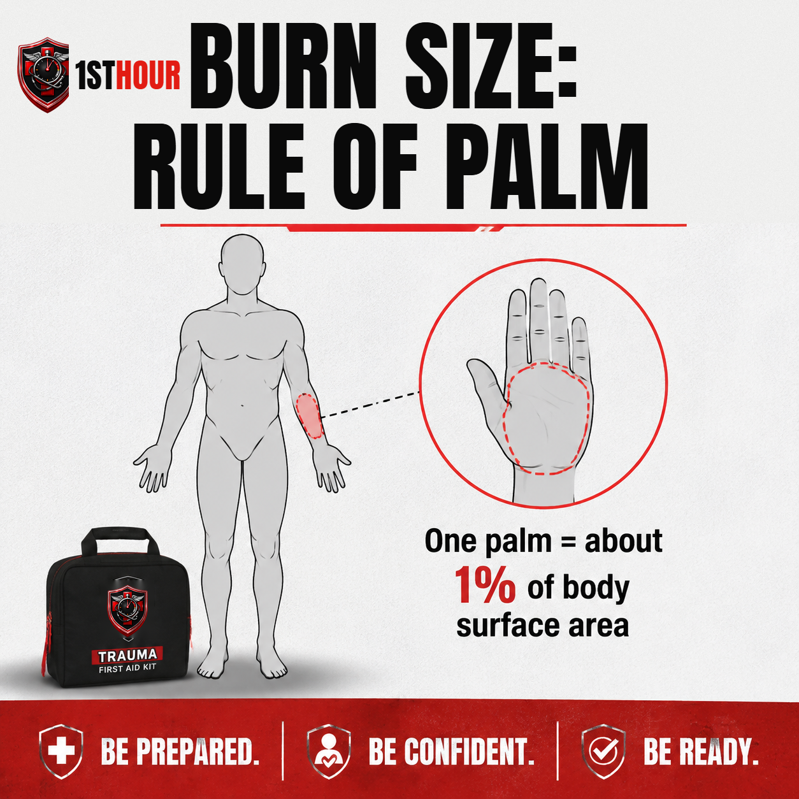
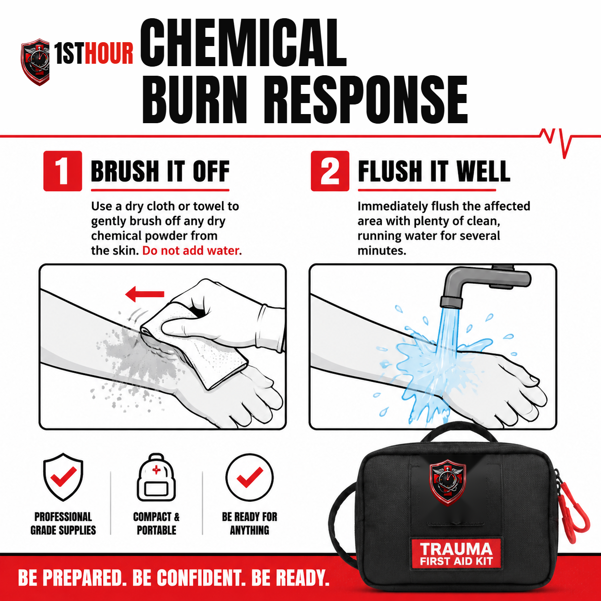

Burn Injury: Thermal, Chemical & Electrical
Three different burn mechanisms, three different first responses — what to do in the first minutes after a thermal, chemical, or electrical burn, and how to tell which one you're dealing with.
1. Why the First Hour Matters
A burn doesn't stop injuring tissue the instant the heat, chemical, or current is gone. Around the initial site of damage sits what burn medicine calls the zone of stasis — a ring of tissue that isn't destroyed outright but is critically low on blood flow and can die over the following hours if it isn't cooled and cared for quickly. In practical terms, that means the burn you see in the first sixty seconds is not necessarily the burn you're left with. What you do in the first few minutes measurably changes how deep and how large the injury becomes.
This is different from a bleeding emergency, where the danger is losing too much blood too fast. With a burn, the early danger is ongoing tissue damage that keeps spreading outward and downward from the original injury — and the single biggest lever you have to stop it is speed. Cooling a thermal burn, flushing a chemical burn, or getting an electrical injury properly evaluated within the first minutes can be the difference between a burn that heals on its own and one that needs a skin graft.
This guide walks through three genuinely different burn mechanisms — thermal (heat), chemical, and electrical — because they don't share one first response. Treating a chemical burn like a thermal burn (or vice versa) can make things worse. Read Section 2 first so you can tell which one you're dealing with, then jump to the section that matches.
2. Recognizing Burn Severity
Two things determine how serious a burn is: how deep it goes (degree) and how much surface area it covers (size). A small deep burn can be more dangerous than a large shallow one, and certain locations are automatically serious regardless of size. Learn to size up all three quickly.
Burn degrees

1st Degree
Red, painful, dry, no blisters. Affects only the outermost layer of skin. Typically from sunburn or a brief scald. Heals in 3–6 days.
2nd Degree
Blistered, wet-looking, and significantly more painful than a 1st-degree burn. Affects the outer layer and part of the layer beneath it. Heals in 1–3 weeks; larger ones need medical care.
3rd Degree
White, brown, or charred and leathery-dry — and can paradoxically hurt less than a 2nd-degree burn because nerve endings are destroyed. Always needs emergency care.
4th-degree burns extend beyond the skin into muscle, tendon, or bone. They're rare outside of severe fire, explosion, or high-voltage electrical injuries, and are always a 911 emergency — treat any burn you suspect is this deep exactly as you would a 3rd-degree burn while you wait for help.
Estimating size: the rule of palm

For burns that don't cover an obvious large area, use the injured person's own palm (fingers included) as a rough ruler: one palm ≈ 1% of that person's total body surface area. A burn covering roughly three palm-widths is around 3% of body surface — useful for describing the injury accurately to a 911 dispatcher or EMS crew, who will ask.
Red-flag burns — treat as an ER visit regardless of size
Some locations and circumstances make a burn serious no matter how small it looks:
- Face
- Hands or feet
- Genitals or groin
- Major joints (knee, elbow, shoulder)
- Circumferential burns (fully around a limb)
- Any suspected inhalation injury
3. The Immediate Response Protocol
This sequence applies to all three burn mechanisms at a high level — Sections 4-6 give you the mechanism-specific detail once you've identified which one you're facing. Step 2 is the one thing you act on immediately, before you've necessarily figured out exactly what caused the burn.
- Ensure the scene is safe before you approach. This matters more here than with most injuries — an active flame, a live electrical source, or a spreading chemical can injure you too. Confirm the fire is out, the power is off at the source (not just "looks off"), or the chemical isn't still spreading before you get close.
- Stop the burning process immediately. This is the highest-priority action and it happens before full mechanism identification. If clothing is on fire: stop, drop, and roll, or smother the flames with a blanket or coat — don't let the person run, which fans the flames. Otherwise: put out flames, pull the person clear of a chemical, or move them away from a de-energized electrical source. Use bare hands if nothing else is available, or non-latex gloves from your kit if they're within reach without delaying this step. Every additional second the source keeps acting on the skin adds depth and size to the injury.
- Call or have someone call 911. Any burn serious enough that you're working through this protocol is worth a call — don't wait to see how it looks once it's cooled or flushed.
- Now identify the mechanism — thermal, chemical, or electrical — since each has a different next step: cool it if thermal (Section 4), brush off dry chemical before flushing if chemical (Section 5), or treat as a possible internal-injury risk if electrical (Section 6).
- Remove jewelry, belts, watches, and tight clothing from around and near the burn before swelling starts. Once tissue swells, these become difficult to remove and can cut off circulation.
- Once cooled or flushed, cover the burn loosely per Section 7 — never wrap it tightly.
- Watch for shock and treat it per Section 8 if it develops, especially with a larger or deeper burn.
- Keep monitoring breathing and level of consciousness until help arrives, particularly if there's any sign of inhalation injury (Section 9).
4. Thermal Burns
Thermal burns — from flame, hot liquid, steam, or contact with a hot surface — are the most common burn type, and cooling technique matters more than almost anything else you do.
- If clothing is on fire, stop, drop, and roll, or smother the flames with a blanket, rug, or coat — don't let the person run, which fans the flames and makes them burn faster. This is covered in Section 3, Step 2, and matters enough to repeat here.
- Cool the burn with cool or lukewarm running water for 10–20 minutes. Tap water is ideal. This is the single most effective thing you can do to limit how deep the burn ultimately becomes.
- Never use ice or ice water. It feels like it should help, but ice constricts blood vessels in already-damaged tissue and can cause a second, cold-related injury on top of the burn.
- Remove jewelry, watches, and tight clothing near the burn before swelling makes that impossible.
- Don't pop any blisters that form. An intact blister is a natural, sterile barrier against infection.
- Don't apply butter, oil, toothpaste, or other home remedies. These trap heat against the skin, don't cool anything, and raise infection risk. Cool water and, once cooled, a clean non-stick dressing (Section 7) are all a thermal burn needs from you.
5. Chemical Burns
Chemical burns need a different first step than thermal ones — and getting the order wrong can make things worse.

- If the chemical is a dry powder, brush it off first — before adding any water. Some dry chemicals react with water and generate additional heat or become more caustic when wetted. Use a dry cloth, gloved hand, or brush to remove as much as possible first.
- Then flush with large amounts of clean, running water for at least 20 minutes, longer if pain continues or the chemical is strongly acidic or alkaline — when in doubt, keep flushing rather than stopping early. Keep water flowing away from unaffected skin, not pooling on it.
- If the eye is involved, remove contact lenses if present and easy to do without delay, then flush continuously with clean water or saline, holding the eyelid open, and keep flushing on the way to — or while waiting for — emergency care. Eye chemical exposure is always a 911/ER situation.
- Remove any clothing or jewelry that has chemical on it as you flush, being careful not to spread the chemical to unaffected skin or to your own hands.
- Protect yourself. A chemical strong enough to burn skin can injure you through contact or fumes — use gloves and eye protection from your kit if available, and don't become a second casualty.
6. Electrical Burns
Electrical burns are the mechanism where scene safety is genuinely not optional, and where the visible injury can badly understate what actually happened inside the body.
- Confirm the power source is off before you touch the person. Never assume — if you can't confirm the source is de-energized (breaker off, device unplugged, downed line confirmed dead by someone qualified to say so), do not touch the person or anything they're in contact with. Call 911 and the utility company if a power line is involved.
- If the source can't be confirmed off and no qualified person is available, only separate the person using a dry, non-conductive object — a wooden broom handle, a dry plastic or wood chair, a dry rope looped around a limb — and only if you can do it without stepping in water or touching anything metal or wet yourself. Push or pull the person away from the source; never use anything metal or damp, and never use your bare hands.
- Once the source is confirmed off (or the person has been safely separated from it), check breathing and responsiveness and begin CPR if needed and you're trained — electrical current can disrupt the heart's rhythm even without a visible injury.
- Understand that the visible burn size can dramatically understate the internal damage. Electrical current travels through the body along the path of least resistance — often nerves and blood vessels — causing injury well beyond the small entry and exit marks you can see on the skin, conceptually similar to how a gunshot wound can cause internal bleeding out of proportion to its small entry wound.
- Treat the visible entry and exit points as burns per Sections 4 and 7, but do not assume the visible marks represent the full extent of the injury.
- Get any electrical shock evaluated, even if the person "looks fine." Electrical current can cause a heart rhythm problem (arrhythmia) that isn't obvious right away. This includes household current — a shock from a wall outlet, frayed cord, or appliance is not automatically "minor" just because it didn't come from a power line. The only exception is a trivial static discharge (a doorknob zap); anything involving actual household or higher voltage should be seen by a medical professional the same day.
7. Pressure Dressings & Covering the Burn
Once a burn has been cooled (thermal) or flushed (chemical) — or once an electrical injury's visible marks have been addressed — covering it correctly protects it while you wait for further care.
- Use a non-stick or non-adherent dressing. Regular gauze or cloth can stick to a burn and tear the wound open again on removal. A non-stick pad, or plastic wrap loosely applied, is a better choice if that's what your kit has.
- Cover loosely — never wrap tightly. Burned tissue swells over the following hours. A tight wrap that fit fine at first can become a tourniquet as swelling increases, cutting off circulation.
- No topical home remedies under the dressing. No butter, oil, toothpaste, or ointment unless it's a product specifically included in your kit for burn care and you're following its label instructions.
- Check circulation beyond the dressing periodically (fingers/toes warm and pink, not cool or discolored) if the burn is on a limb, and loosen the covering if swelling makes it feel tight.
8. Shock Recognition & Management
Shock is what happens when the body can't deliver enough blood and oxygen to its organs — and a severe burn is one of the causes, since a large burn can cause significant fluid loss through the damaged skin. It can develop within minutes of a major burn and is dangerous in its own right, independent of the burn itself.
Signs of shock:
- Pale, cool, or clammy skin
- Rapid, weak pulse
- Rapid, shallow breathing
- Confusion, anxiety, or restlessness
- Nausea or vomiting
- Extreme thirst
- Progressive weakness or loss of consciousness
What to do:
- Keep treating the burn itself — cooling, flushing, or covering as appropriate — since shock will not improve while the underlying injury goes untreated.
- Lay the person flat if there's no suspected spinal injury. If there's also no suspected leg injury or breathing difficulty, you may gently raise the legs about 6–12 inches — current first aid guidance notes this can help blood return to vital organs, but the effect is brief and not required, so don't delay or skip warmth and burn care to do it. Stop if it causes pain, shortness of breath, or is impractical given the injury location.
- Keep them warm. Cover with a blanket, jacket, or emergency blanket — but keep any blanket or covering off a freshly cooled/flushed burn area itself if it's still being cooled. Losing body heat worsens shock significantly.
- Do not give food or water, even if they ask for it — it can cause vomiting and complicates anesthesia if surgery is needed.
- Keep talking to them. Reassurance and staying conscious/responsive matters; note any change in alertness to report to EMS.
9. Special Situations
Inhalation injury — a separate, urgent airway concern
A skin burn and an inhalation injury are two different emergencies that often happen together, especially in a house or vehicle fire. Watch for these red flags separate from the skin burn itself, and treat any of them as a 911 emergency even if the visible skin burn looks minor:
- Soot around the mouth or nose
- Singed nasal hair, eyebrows, or facial hair
- A hoarse voice or persistent cough
- Any burn that happened in an enclosed space (house, car, small room)
Inhalation injury can cause airway swelling that gets worse over the following hours, sometimes well after the person seems stable — don't wait for breathing trouble to appear before calling 911 if any of the above signs are present.
Pediatric burns
The same core techniques apply — stop the burning process, cool or flush, cover — but a child's total body surface area is much smaller, so a burn that looks moderate by adult standards represents a larger percentage of a child's body and a proportionally bigger risk of shock and fluid loss. Treat burns in children with a lower threshold for calling 911.
Multiple-casualty burns
In a house fire or similar incident with more than one person burned, prioritize by severity and urgency: airway/inhalation concerns and burns on red-flag locations (Section 2) first, then largest/deepest burns, then everyone else. Get 911 dispatched immediately regardless of how triage sorts out, since a multi-casualty burn incident typically needs more than one responding unit.
10. Climate & Demographic Notes
Burn risk skews differently depending on climate, though the response itself doesn't change:
- Hot climates: Sunburn (a 1st-degree, sometimes 2nd-degree burn) and scald burns from hot pavement, playground equipment, or vehicle interiors are more common in southern and desert states, especially for children and pets. Treat sunburn covering a large area, or with blistering, using the same thermal-burn cooling guidance in Section 4.
- Cold climates: Space heaters, wood stoves, and fireplaces raise both thermal-burn and carbon-monoxide risk in northern states during winter months — keep heat sources away from bedding and flammable material, and never use one as a primary sole heat source in an unventilated space.
11. When to Call 911
Also call for any burn in a child, an elderly person, or someone with other health conditions (diabetes, immune suppression, heart or lung disease) even if the burn itself looks moderate — the same-size burn carries more risk for these groups.
Stay on the line if you can. Dispatchers are trained to walk you through cooling, flushing, and shock management in real time and will tell you exactly what information responding units need.
12. Aftercare & Follow-Up
Once immediate treatment is done — or EMS has taken over — a few things matter for the days that follow.
- Leave intact blisters alone. If a blister breaks on its own, gently clean the area and cover with a non-stick dressing rather than peeling away remaining skin.
- Watch for infection warning signs over the following days: increasing redness or swelling, pus or cloudy drainage, a foul odor, increasing pain instead of gradually improving pain, or fever. Any of these warrants a medical visit.
- Change dressings per your kit's or provider's instructions — typically once daily or whenever a dressing becomes wet or dirty, using clean technique (wash hands, use fresh sterile dressing material).
- Restock your kit immediately after any real use — burn dressings, gauze, and any burn gel used in a real emergency need to be replaced before the kit is trusted again.
13. Essential Items Checklist
Everything in this protocol assumes certain supplies are within reach when a burn happens. Run through this list before you ever need it — restock immediately after any real use, per Section 12.
- Sterile non-stick dressings — Section 7. Won't tear the wound open on removal like regular gauze can.
- Saline or a clean water source — Sections 4–5. Cooling and flushing are the single most effective first actions for thermal and chemical burns.
- Burn gel or hydrogel dressing — Sections 5 & 7, if your kit includes one. Follow its label instructions in addition to, not instead of, water.
- Non-latex gloves — worn before contact with the burn or any chemical involved, if reaching them doesn't delay stopping the burning process, per Section 3, Step 2.
- Trauma shears — Section 3. Cuts clothing away from a burn without peeling stuck fabric off the wound.
- Emergency/space blanket — Section 8. Warmth slows the progression of shock.
14. Your State: Good Samaritan Protections
Every U.S. state has some form of Good Samaritan law — legal protection for people who provide reasonable emergency assistance in good faith, without expectation of payment. The exact wording, what's covered, and any exceptions vary by state, and laws change over time. Burn response doesn't involve any state-specific medical technique differences, so rather than repeating a full state-by-state grid here, the short version: if you stop to help someone with a burn injury in good faith and without expecting payment, your state almost certainly has some form of legal protection in place.
15. Medical Disclaimer
This guide is for general educational purposes only and does not constitute medical advice, diagnosis, or treatment. It is not a substitute for professional medical care, emergency medical services, or a certified first aid, CPR, or Stop the Bleed course, which we strongly recommend taking in person.
In any real emergency, call 911 (or your local emergency number) immediately. Nothing in this guide should delay that call.
The Good Samaritan law information in Section 14 is general information, not legal advice. Laws vary by state, change over time, and may have exceptions not covered here. Consult a licensed attorney in your state for guidance on your specific situation.
1st Hour and its parent company make no warranty, express or implied, regarding outcomes from applying the information in this guide, and disclaim liability for actions taken based on its contents to the fullest extent permitted by law.
Editor's note: this edition reflects content as of August 24, 2026. 1st Hour periodically revises protocol guides as best practices evolve — visit 1sthourprotocols.com/burn-injury for the current edition and to re-download the latest PDF.